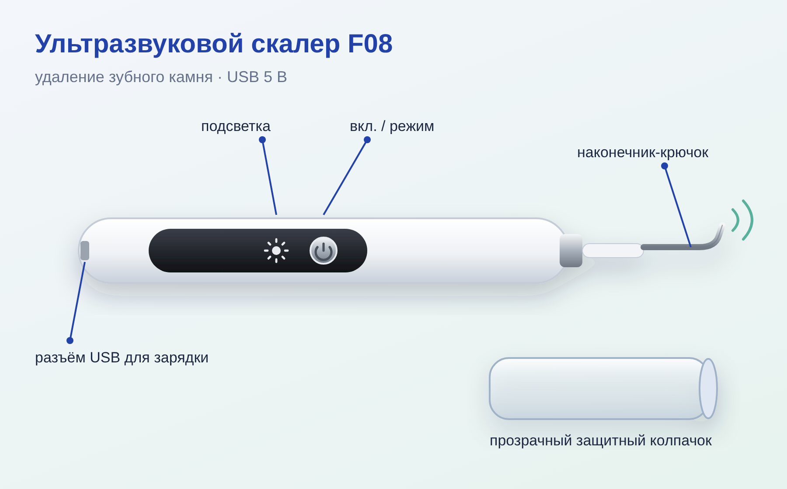
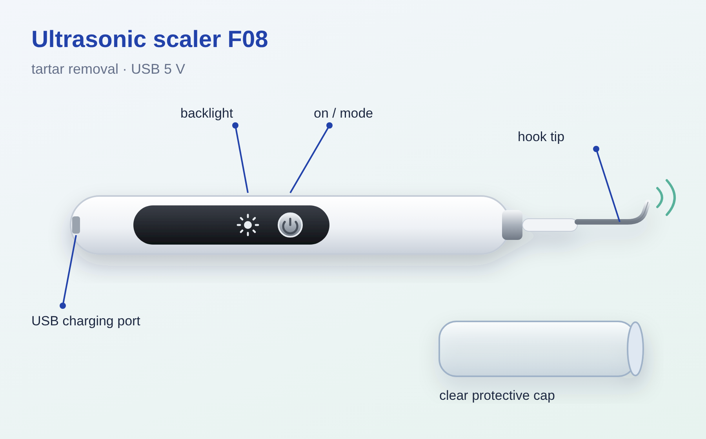
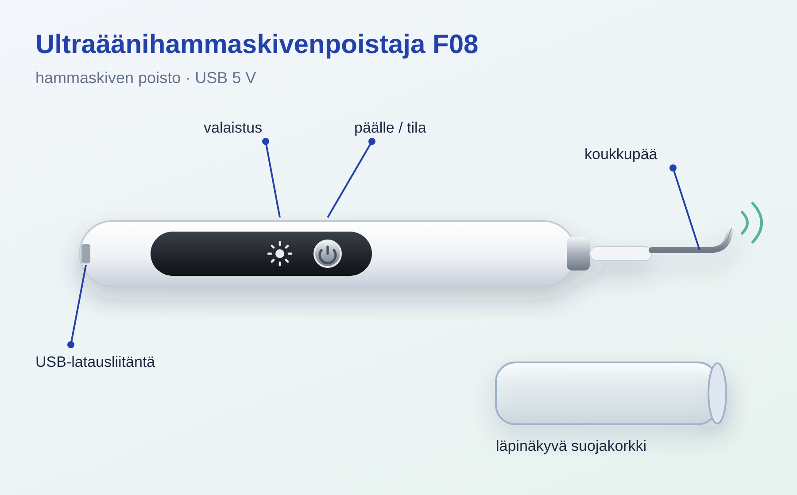

• Ультразвуковой скалер — прибор для домашнего удаления зубного камня и плотного налёта. • Металлический наконечник-крючок колеблется с ультразвуковой частотой и откалывает камень, не царапая эмаль при правильном угле. • Модель F08, Jiu Tian Long (Shenzhen). Питание: аккумулятор, зарядка по USB 5 В / 1 А. • Хранится: санузел мастер-бедрум, аптечка 025.
• Нижняя круглая кнопка (⏻): долгое нажатие — включить/выключить; короткое нажатие — переключить режим (сила вибрации). • Верхняя кнопка «солнышко»: подсветка рабочей зоны. • ВАЖНО (наклейка NOTE): при включении прибор НЕ звучит и НЕ вибрирует ощутимо. Работа заметна только когда наконечник касается зуба или твёрдого предмета — появляется жужжание.
• Зарядить по USB до полного (индикатор перестанет мигать / станет постоянным). • Снять прозрачный колпачок, протереть наконечник спиртовой салфеткой. • Почистить зубы обычной щёткой, прополоскать рот. • Встать у зеркала с хорошим светом, включить подсветку. • Начинать с самого слабого режима.
1. Включить долгим нажатием ⏻, выбрать слабый режим коротким нажатием. 2. Взять прибор как ручку. Наконечник держать почти параллельно поверхности зуба (угол 10–15°), НЕ остриём в зуб. 3. Подвести кончик к границе камня у десны и лёгкими движениями вести вдоль зуба от десны к краю — как будто «счищаете» камень, без нажима. 4. На одном месте не дольше 2–3 секунд, затем перейти к соседнему участку и вернуться позже. 5. Удобнее всего с внутренней стороны нижних передних зубов — там камень чаще всего. 6. Время одного сеанса — 5–10 минут. Каждые 1–2 минуты сплёвывать и полоскать рот. 7. Если камень плотный — не усиливать нажим, а сделать несколько коротких проходов или повторить через несколько дней.
• Давить на десну и заводить наконечник глубоко под десну. • Держать кончик неподвижно в одной точке или ставить его остриём перпендикулярно эмали. • Использовать на пломбах, коронках, винирах, имплантах и брекетах. • Пользоваться при кровоточащих воспалённых дёснах, после удаления зуба, при повышенной чувствительности зубов. • Пользоваться с кардиостимулятором — сначала спросить врача. • Чистить чаще 1 раза в неделю: прибор не заменяет профессиональную чистку у стоматолога.
• Прополоскать рот, можно антисептиком (хлоргексидин — в этой же аптечке 025). • Небольшая чувствительность или розовая десна 1–2 дня — нормально; если кровит сильно или болит — прекратить и к стоматологу. • Наконечник промыть водой и протереть спиртом, корпус — сухой/влажной салфеткой. Прибор целиком под воду не опускать. • Высушить и надеть колпачок.
• Заряжать от USB-адаптера 5 В / 1 А или от компьютера. • Хранить сухим, с надетым колпачком, вне ванной влаги по возможности. • Если наконечник затупился или погнулся — заменить (сменные насадки продаются к таким скалерам).

• An ultrasonic scaler is a device for removing tartar and hard plaque at home. • The metal hook tip vibrates at ultrasonic frequency and chips off the tartar without scratching the enamel when held at the right angle. • Model F08, Jiu Tian Long (Shenzhen). Power: rechargeable battery, USB charging 5 V / 1 A. • Stored in: master bedroom bathroom, medicine cabinet 025.
• Lower round button (⏻): long press — switch on/off; short press — change mode (vibration strength). • Upper "sun" button: lights up the working area. • IMPORTANT (NOTE sticker): when switched on, the device does NOT make a sound or vibrate noticeably. You can only tell it is working when the tip touches a tooth or a hard object — a buzzing sound appears.
• Charge fully via USB (the indicator stops blinking / stays lit). • Remove the clear cap and wipe the tip with an alcohol wipe. • Brush your teeth with an ordinary toothbrush and rinse your mouth. • Stand at a mirror with good light and switch on the light. • Start with the weakest mode.
1. Switch on with a long press of ⏻, choose a weak mode with a short press. 2. Hold the device like a pen. Keep the tip almost parallel to the tooth surface (angle 10–15°), NOT with the point into the tooth. 3. Bring the tip to the edge of the tartar at the gum line and, with light strokes, move along the tooth from the gum towards the edge — as if "scraping off" the tartar, without pressing. 4. No longer than 2–3 seconds in one spot, then move to the neighbouring area and come back later. 5. Easiest on the inner side of the lower front teeth — that is where tartar builds up most often. 6. One session lasts 5–10 minutes. Spit and rinse your mouth every 1–2 minutes. 7. If the tartar is hard — do not press harder; make several short passes or repeat in a few days.
• Press on the gum or push the tip deep under the gum. • Hold the tip still in one spot or point it perpendicular to the enamel. • Use it on fillings, crowns, veneers, implants and braces. • Use it with bleeding, inflamed gums, after a tooth extraction, or with sensitive teeth. • Use it if you have a pacemaker — ask your doctor first. • Clean more often than once a week: the device does not replace professional cleaning at the dentist.
• Rinse your mouth, an antiseptic can be used (chlorhexidine — in the same medicine cabinet 025). • Slight sensitivity or pink gums for 1–2 days is normal; if it bleeds a lot or hurts — stop and see a dentist. • Rinse the tip with water and wipe with alcohol; wipe the housing with a dry/damp cloth. Do not put the whole device under water. • Dry it and put the cap on.
• Charge from a 5 V / 1 A USB adapter or from a computer. • Store dry, with the cap on, away from bathroom humidity if possible. • If the tip has become blunt or bent — replace it (replacement tips are sold for these scalers).

• Ultraäänihammaskivenpoistaja on laite hammaskiven ja kovan plakin poistamiseen kotona. • Metallinen koukkumainen kärki värähtelee ultraäänitaajuudella ja irrottaa hammaskiven naarmuttamatta kiillettä, kun kulma on oikea. • Malli F08, Jiu Tian Long (Shenzhen). Virta: akku, lataus USB:n kautta 5 V / 1 A. • Säilytyspaikka: makuuhuoneen kylpyhuone, lääkekaappi 025.
• Alempi pyöreä painike (⏻): pitkä painallus — päälle/pois; lyhyt painallus — tilan vaihto (värähtelyn voimakkuus). • Ylempi "aurinko"-painike: työskentelyalueen valo. • TÄRKEÄÄ (NOTE-tarra): päälle kytkettynä laite EI pidä ääntä EIKÄ värise tuntuvasti. Toiminnan huomaa vasta, kun kärki koskettaa hammasta tai kovaa esinettä — kuuluu surinaa.
• Lataa täyteen USB:n kautta (merkkivalo lakkaa vilkkumasta / palaa tasaisesti). • Irrota läpinäkyvä suojakorkki ja pyyhi kärki alkoholipyyhkeellä. • Harjaa hampaat tavallisella hammasharjalla ja huuhtele suu. • Asetu hyvin valaistun peilin eteen ja kytke laitteen valo päälle. • Aloita heikoimmalla tilalla.
1. Kytke laite päälle pitkällä ⏻-painalluksella ja valitse heikko tila lyhyellä painalluksella. 2. Pidä laitetta kuin kynää. Pidä kärki lähes hampaan pinnan suuntaisena (kulma 10–15°), EI kärki kohti hammasta. 3. Vie kärki ikenen rajassa olevan hammaskiven reunaan ja liikuta sitä kevyin vedoin hammasta pitkin ikenestä kohti reunaa — ikään kuin "kuorisit" kiven pois, painamatta. 4. Älä pidä kärkeä samassa kohdassa yli 2–3 sekuntia, siirry viereiseen kohtaan ja palaa myöhemmin. 5. Helpointa on alaetuhampaiden sisäpinnalla — sinne hammaskiveä kertyy useimmin. 6. Yksi käyttökerta kestää 5–10 minuuttia. Sylkäise ja huuhtele suu 1–2 minuutin välein. 7. Jos hammaskivi on kovaa — älä paina kovempaa, vaan tee useita lyhyitä vetoja tai toista muutaman päivän kuluttua.
• Painaa iientä tai viedä kärkeä syvälle ikenen alle. • Pitää kärkeä paikallaan samassa kohdassa tai asettaa sitä kärki kohtisuoraan kiillettä vasten. • Käyttää paikkojen, kruunujen, laminaattien, implanttien ja oikomiskojeiden päällä. • Käyttää, jos ikenet vuotavat verta tai ovat tulehtuneet, hampaan poiston jälkeen tai jos hampaat ovat vihlovat. • Käyttää sydämentahdistimen kanssa — kysy ensin lääkäriltä. • Puhdistaa useammin kuin kerran viikossa: laite ei korvaa hammaslääkärin ammattimaista puhdistusta.
• Huuhtele suu, voit käyttää antiseptistä suuvettä (klooriheksidiini — samassa lääkekaapissa 025). • Lievä vihlonta tai punertava ien 1–2 päivän ajan on normaalia; jos ien vuotaa runsaasti verta tai kipeytyy — lopeta ja mene hammaslääkäriin. • Huuhtele kärki vedellä ja pyyhi alkoholilla, runko kuivalla/kostealla liinalla. Älä upota koko laitetta veteen. • Kuivaa ja laita suojakorkki paikalleen.
• Lataa 5 V / 1 A USB-laturilla tai tietokoneesta. • Säilytä kuivana, suojakorkki paikallaan, mahdollisuuksien mukaan poissa kylpyhuoneen kosteudesta. • Jos kärki on tylsynyt tai taipunut — vaihda se (tällaisiin laitteisiin myydään vaihtokärkiä).